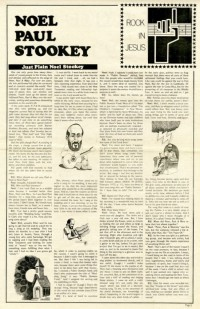
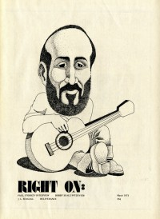

Noel Paul StookeyOn the cover
March 1973
Rock In Jesus |

March 1973
Right On! | Media coverage- Jun 1972 in Campus Life "Paul Stookey On...", by Bob Combs
- Mar 1973 in Rock In Jesus "Just Plain Stookey"
- May 1974 in Right On! "A Joyful Noise: Recounting musicians influenced by the Jesus Movement or now doing more gospel music: Larry Norman, Barry McGuire, Noel Paul Stookey, Johnny Cash, Eric Clapton, Tommy James, Billy Preston, Chi Coltrane, Turley Richards", by Paul Baker
- Nov 1974 in HIS "Pop On The Rocks", by Jim Ward
- May 1975 in Christian Life "From Star to Servant", by Jay Caress
- Feb 1977 in HIS "A Glimpse Into Paul Stookey", by Mickey Moore
- 19 May 1978 in Christianity Today "Noel Paul Stookey Down Home", by Cheryl A. Forbes
- Aug 1978 in Contemporary Christian Music "And It's 'Paul and' Once Again"
- Nov 1978 in Campus Life "Spotlight: Noel Paul Stookey"
- Mar 1979 in Christian Life "Entertainment: The People Lover", by Jane Johnson Struck
- Nov 1979 in Campus Life "Spotlight: Noel Paul Stookey"
- Jan 1980 in Eternity "Mars Hill: Musicians Board the Slow Train", by Sharon Gallagher
- Jul 1980 in Christian Herald "The Quiet New Life of Noel Stookey", by Audrey T. Hingley
- May 1982 in Charisma "Interview: Noel Paul Stookey", by Trip Sinnott
- Jan 1983 in Radix "Jubal: Noel Paul Stookey", by Sharon Gallagher
- Sep 1983 in Contemporary Christian Magazine "Noel Paul Stookey"
- Dec 1985 in Contemporary Christian Magazine "Faith & (Body) Works", by Davin Seay
- Spr 1986 in Radix "Jubal: Noel Paul Stookey", by Sharon Gallagher
- Dec 1986 in The Other Side "Media Focus: State of the Heart", by Niki Amarantides
- Sep 1990 in CCM "In The News: Bodyworks and Beyond", by Thom Granger
- 1991 in Radix "A Joyful Noise: Musicians Speak: on his conversion"
- Feb 1994 in CCM "In Concert: Wheaton College, Wheaton, IL", by John J. Thompson
- 1999 in Radix "Radix Retrospective"
- Apr 2016 in Sojourners "Culture Watch: Still Singing Out Love", by Jeanne Torrence Finley
Albums & reviews:1978: Something New and Fresh 1982: Wait'll You Hear This 1990: In Love beyond Our Lives 2015: At Home: The Maine Tour
Award Summary (Nominations / Wins)
Grammy AwardsPublished articles1 article credited in Christianity Today: 1980.Books about Noel Paul Stookey |